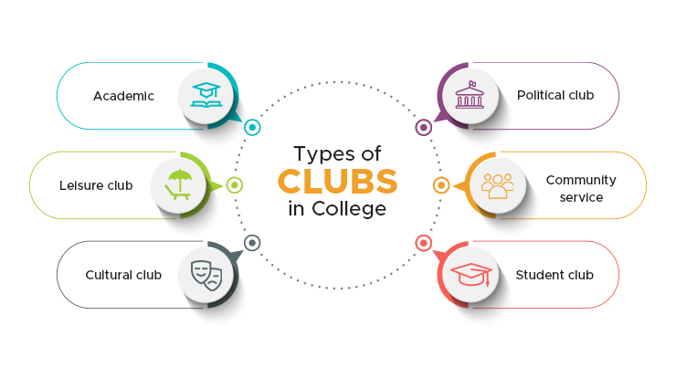
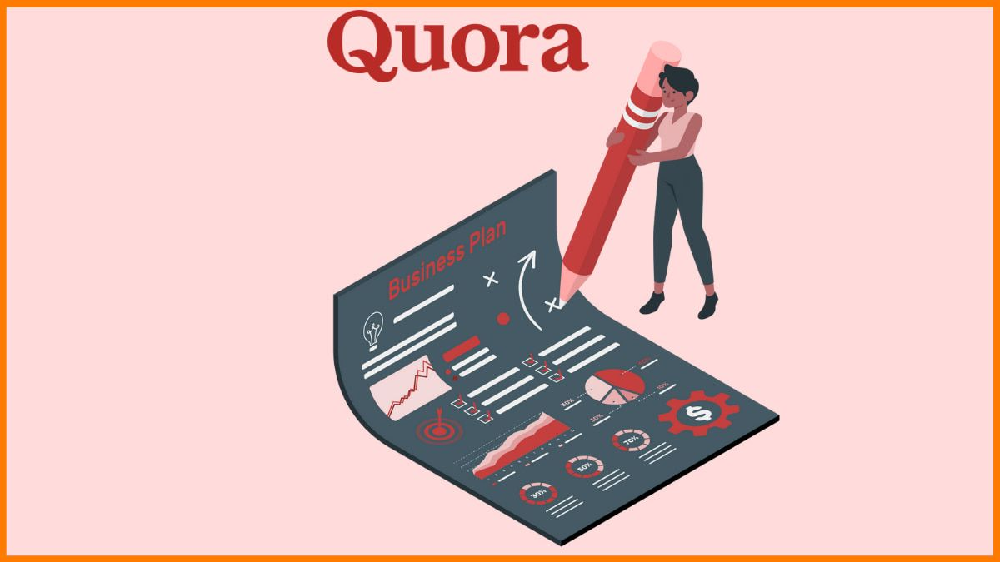

Club Hub(clubs management website):
Designed and developed a club management website. Implemented features such as member
registration, event scheduling, and announcements. Created interactive forms and dynamic content
updates to enhance user engagement. Utilized responsive web design principles to ensure
accessibility across various devices. Integrated front-end validations to ensure data integrity and a
seamless user experience using HTML,CSS and JS

Quora duplicate question pair detection:
Developed a machine learning model to detect duplicate question pairs on Quora. Leveraged natural
language processing (NLP) techniques to preprocess text data, including tokenization, stemming, and
vectorization. Engineered features such as TF-IDF vectors and word embeddings. Trained and
evaluated models using various algorithms including logistic regression, random forest, and XGBoost
classifier. Achieved high accuracy and precision in identifying duplicate questions, contributing to
improved user experience and content organization on the platform using Python